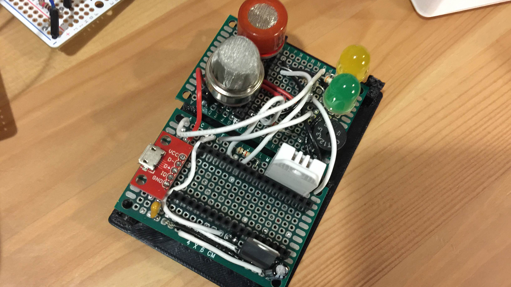
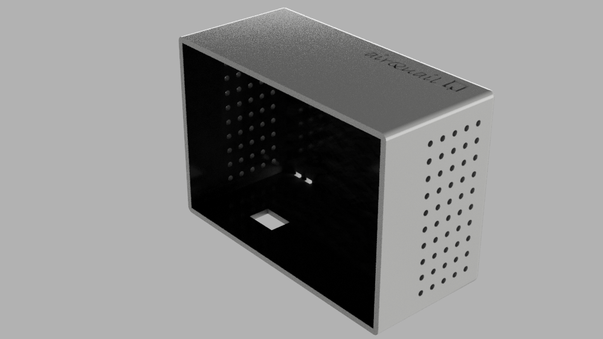
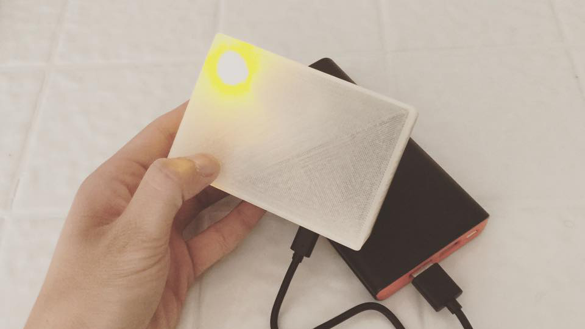
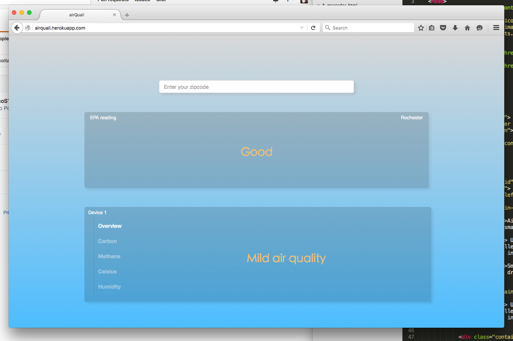
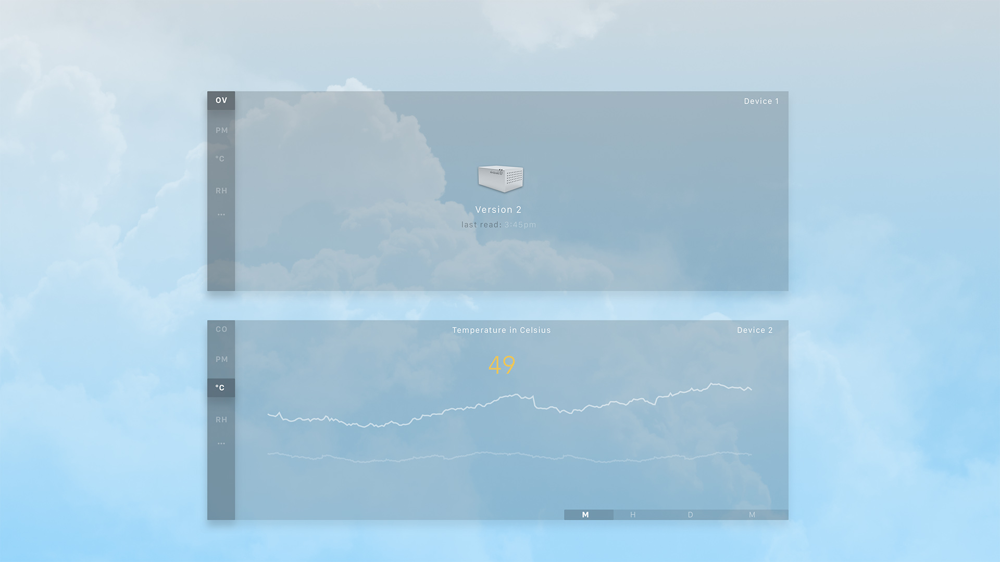
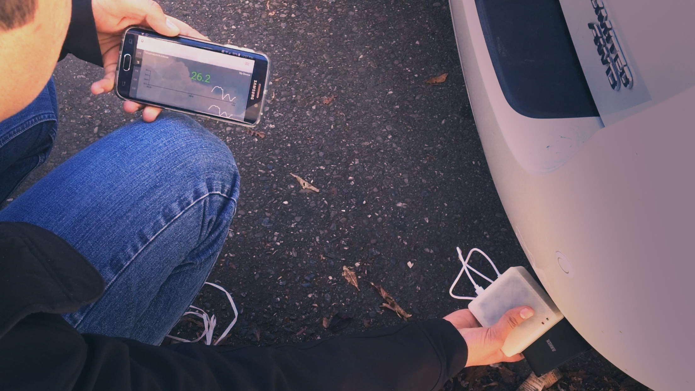
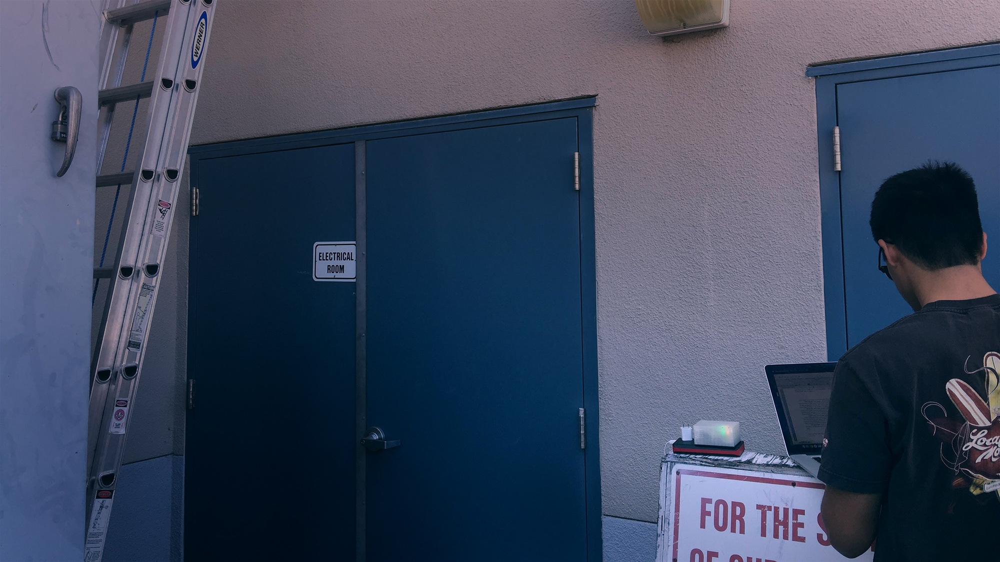
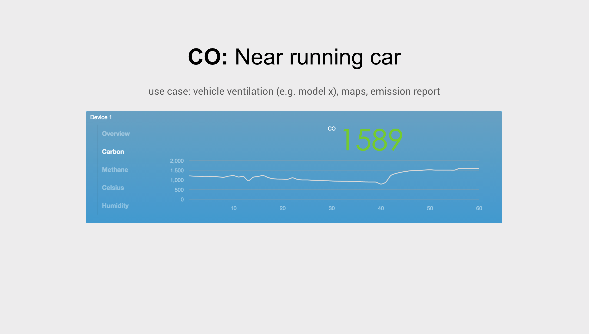
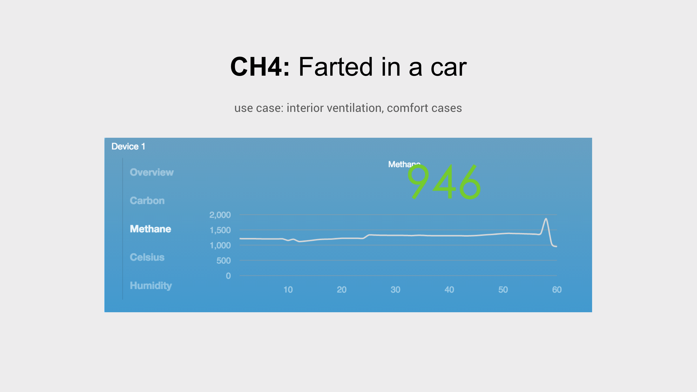

Airquail is the internet of things hardware startup that I cofounded. It started as a weekend hackathon project, and for 12 weeks it turned into a fulltime pursuit after we joined the Hackcelerator accelerator program. We're currently on our 3rd hardware prototype and have our devices in local school districts.
Story
Sorry if I was a little nervous...there were 140 investors in the crowd
Part 1: hardware product design
Our time and resources are limited, so we made some tough decisions on which combinations of gases we wanted to monitor. Early on, when making decisions about the product, it's not always about the customer, the market, or what's usable. If we were going to dedicate our lives to building a product, it better be something we ourselves wanted to use. So although healthcare was a hot market, I strongly believed we should focus more on gases associated with comfort and wellness. We don't want to be an alarm that monitors that monitors that toxic gas that will kills 50 people a year, and we also didn't want to just monitor gases that will shorten your lives by 12 months. Instead, it's about telling people more about the gases that are always around you yet you can't see and how they can unconsciously influence your lifestyle. So that's why we went with Carbon Dioxide, Carbon Monoxide, Pm 2.5. We also added other sensors such as temperature, humidity, pressure for the sole purpose of making our primary gas algorithms more accurate.


For our prototypes, we 3d printed our own enclosures. Small vents allowed for passive air diffusion. This worked well when the device just sat around to collect gradual changes. For demo purposes and with certain gases requiring faster readings, we learned that sometimes active intake was more ideal.

Unlike competitors, we wanted our device to have (1) better integration with appliances and (2) better integration with user lifestyle. The first step to smart home integration was creating our own REST API that other devices and appliances could read.
To meet our second goal we needed a portable device that was small enough to carry and powered by a battery. We couldn't create a device that just plugged into the wall and sat by the nightstand all day. When I was testing our first device, it was so much fun carrying it around and seeing with my own eyes how the gases in my environment would change wherever I went.
Part 2: software product design
Our first webapp was just a proof of concept. We started by pulling data from the EPA to compare with the data from our own device. By typing a zipcode, you could see some general readings from public weather stations regarding dust and carbon monoxide levels.
After refining our technology, we needed to build a more serious backend supporting more users - it also didn't hurt to give the layout a facelift. We added multi user and device support, more historical data, more gas sensors, and new charts using c3.js. We also had an iOS app in test flight that we killed, so we made our webapp more usable on a mobile browsers.
Part 3: field testing
Part 3: installing our devices in schools
After testing in different homes and installing our device at a few schools, we ran into many unforseen obstacles. School and offices often have secured wifi networks that are hard for our device to connect with.
Part 4: results
Demonstrating increased health hazard around heavy traffic
Demonstrating the sensitivity of our device:
